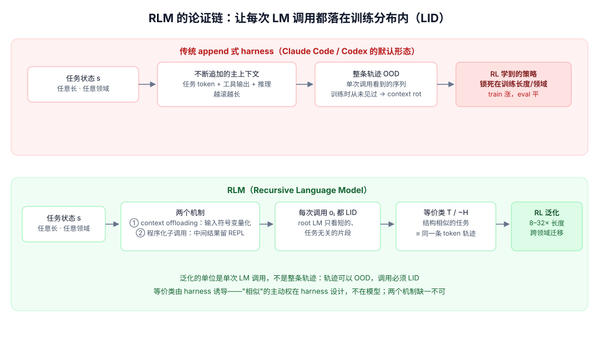
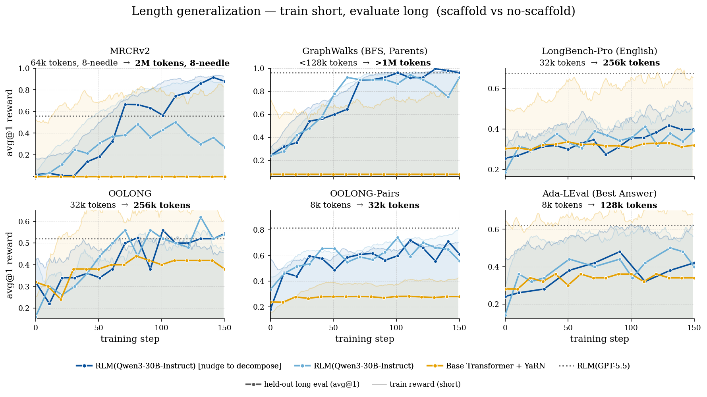

Language model harnesses are compositional generalizers：泛化能力是 harness 的职责
- Source: Language model harnesses are compositional generalizers
- Author: Alex L. Zhang、Omar Khattab（MIT OASYS）
- Published: 2026-07-20，技术博客长文（附 RL 实验与开源仓库）
- 类型: position paper + 实验验证（Qwen3-30B-A3B + prime-rl）
- 关键词: harness, RLM, compositional generalization, locally in-distribution, context offloading, programmatic sub-calls
读法：给人和 agent 的路标
不要把它当“又一篇 agent benchmark 报告”读。它是一篇立场文章：作者认为 post-training 越来越依赖“更多环境、更长 horizon”的蛮力，根源是 Transformer 本身不擅长组合泛化（compositional generalization），而泛化能力应该主要住在 harness 里。读完应该带走三个东西：LID（locally in-distribution）这个判据、harness 诱导的“任务等价类”机制，以及两组 RL 实验的证据强度与边界。
给 agent 之后检索，关键词是：LID locally in-distribution、harness equivalence class、context offloading、programmatic sub-agent calling、RLM recursive language model、8-32x length generalization、nudge to decompose、MGH Mismanaged Geniuses Hypothesis。
一句话判断
训练数据不是唯一的泛化杠杆：把每次 LM 调用都约束在训练分布内（LID）的 harness，能把短任务上 RL 学到的分解策略泛化到 8–32 倍长的任务、甚至完全不同的领域。 RLM 用 context offloading 和程序化子调用两个机制，让“结构相似的任务”在 root LM 眼里逐 token 同构；同样训练量下，它的 eval lift 追平甚至超过 train lift，而裸 Transformer 的 eval 曲线几乎不动。
图表优先读法
| 先看 | 图/表 | 读完应该抓住什么 |
|---|---|---|
| 1 | 自制论证链图 | append 式 harness 为什么必然 OOD；RLM 式如何保持 LID |
| 2 | Fig 2（轨迹同构示意） | 两个不同任务在 root LM 上下文里逐 token 相同 |
| 3 | Fig 5（两个机制对比） | offloading 管输入，程序化子调用管中间状态 |
| 4 | Fig 4（LID vs OOD） | 判据本身：每次调用在分布内 vs 整条轨迹没见过 |
| 5 | Fig 6（六任务长度泛化曲线） | 证据强度：哪些任务成立、哪里需要 nudge |
先看我整理的论证链

自制图解：上 lane 是 Claude Code / Codex 式 append harness——任务 token、工具输出、推理不断拼进主上下文，整条轨迹迅速离开训练分布（context rot）；下 lane 是 RLM——context offloading 把原始输入换成符号变量，程序化子调用把中间结果留在 REPL 变量里，root LM 每次调用只看到短而任务无关的片段（LID），于是结构相似的任务落入同一等价类，短任务上 RL 学到的策略可以搬到 8–32 倍长的任务和别的领域。
三个锚点：泛化的单位是“单次 LM 调用”，不是整条轨迹（轨迹可以 OOD，调用必须 LID）；等价类由 harness 诱导（“相似”的主动权在 harness 设计，不在模型）；两个机制缺一不可（只 offload 输入，反馈回流还是会把主上下文拖回 OOD）。
核心概念：LID 与 harness 诱导的等价类
harness 的定义被作者写得很干净：$H: s \rightarrow a$，坐在外部世界和神经网络之间的程序，决定如何把任意长、任意复杂的环境状态编码成一次或多次 LM 输入，并决定下一个动作。这个定义下，Claude Code、Codex 只是 harness 的一种，“调工具”只是职责的一部分——更根本的权力是把复杂状态 $s$ 简化成多个每次调用都能处理的观测 $o$。
判据叫 LID（locally in-distribution）：即使完整任务轨迹对模型是 OOD 的，好的 harness 保证每一次 LM 调用看到的 prompt 都在训练分布内。作者据此批评 Claude Code / Codex 式的 append 设计：任务信息、工具输出、推理不断追加，上下文越滚越长，很快离开训练分布——这就是实践中观察到的 context rot。注意这是作者的 framing：这两家实际上都在用 compaction、sub-agent 隔离等手段逼近 LID，但“追加即默认”的批评成立。

原图（文章 Figure 4）：左侧 LID——每个 LM 调用只看到 task prompt + reasoning 的短片段，子查询和工具被拆成独立的小观测；右侧 OOD——一条拼到底的长序列，对单次调用来说是完全“没见过”的输入。
由 LID 再进一步：harness 在所有任务状态的集合上诱导了一个等价算子 $\sim_H$——结构相似的任务产生结构相似的观测序列，落入同一个等价类。可学习的轨迹空间被压缩到很小的 $\mathcal{T} / \sim_H$，而泛化范围反而变大：会解任务 X，就应该会解同类的任务 Y。
两个机制：context offloading + 程序化子调用
RLM（Recursive Language Model）是作者给出 LID 的具体构造，靠两个机制：
- Context offloading：输入上下文作为符号变量传入，root LM 不直接读原始内容，第一步就让不同问题“看起来一样”。但单靠它不够——环境反馈和子代理结果回流主上下文，长程之后照样 OOD。
- 程序化子调用（programmatic sub-agent calling）：工具和子代理都是代码 REPL 里的函数，中间结果存进 REPL 变量，root LM 选择性地取用、传递，全程不必看到任务相关 token。作者强调它与 offloading 同等重要。

原图（文章 Figure 5）：左半，有 offloading 的主上下文是短的任务无关前缀，没有则是越来越长的任务特定前缀；右半，有程序化子调用时工具和子代理的进出都经过 REPL（root 只看 REPL 的短输出），没有则 Tool / Sub-agent 的输入输出全部交错进主上下文。
这两个机制合起来，“结构相似的任务 ⇒ 同构”才成立：root LM 的上下文里只剩下分解策略本身（chunk、fan-out、aggregate），任务内容全在变量里。

原图（文章 Figure 2）：BrowseComp-Plus（训练任务）与 OOLONG（评测任务）的 root LM 轨迹逐步相同——提议分解、按 chunk 扇出子查询、聚合作答；不同的只有两侧子调用实际看到的内容。在一件事上训练，就等于在另一件事上训练过。
和工程 harness 对读很有意思（见我们的 Phistory harness 深度对比）：Codex 的 exec（中间结果留在 JS 内存、只有显式输出回流模型上下文）和 OMP 的 eval kernel，正是“程序化子调用”在工程 harness 里的近亲——只是它们没配 RL 训练，LID 红利吃得不完整。
实验证据：短任务训练，长任务与跨领域泛化
设置。 Qwen3-30B-A3B-Instruct-2507，用 prime-rl（Decoupled PPO + GRPO 式 advantage + KL）只训 root LM：150 步、batch 64、每样本 4 rollouts。长度泛化用 6 个环境（MRCRv2、GraphWalks、LongBenchPro、OOLONG、OOLONG-Pairs、Ada-LEval），只在短 split 上训练，在 8–32 倍长的 split 上评测；领域泛化用 3 组“分解策略相同、领域 token 完全不同”的任务对（如 TREC 问题聚合 → 垃圾短信聚合）。

原图（文章 Figure 6）：深色实线是长任务 held-out eval，浅色是短任务 train reward。RLM（蓝系）的 eval 曲线随训练持续爬升，在 MRCRv2、GraphWalks、OOLONG、OOLONG-Pairs 上逼近或超过 GPT-5.5 + RLM harness（虚线）；Base Transformer + YaRN（黄）train reward 涨但 eval 几乎平——学到的东西不外推。
三个结果要点：
- eval lift 追平甚至超过 train lift。 RLM 的长任务 eval 提升与 train 提升同量级；个别实验里它先学到“只对短任务有效”的策略、随后又发现更可泛化的分解方式，eval 反超 train。
- 跨领域迁移同样成立（文章 Figure 7，三组 OOLONG / OBLIQ 任务对）：train 与 test 的 token 分布完全不同，唯一相似的是潜在任务结构，RLM 仍然迁移；裸 Transformer 的早期提升主要来自学会答案格式，随后停滞，且它的 train reward 普遍高过 RLM——train 与 eval 脱节更明显。
- 失效模式很明确。 如果 RLM 在短任务上学到“把整个问题塞给一个子调用”的偷懒策略，就退化成普通长上下文 baseline。作者用一个 “nudge to decompose” 的用户提示变体在 MRCRv2 上把策略推回可泛化轨道——可泛化策略不保证自发涌现，需要多少监督/蒸馏是开放问题。
成本：同样规模任务上 RLM 训练比裸 Transformer 慢 1.5–3 倍（每样本多步 + 等子调用），但随任务变长，Transformer 的训练成本涨得更快——RLM 的成本曲线随复杂度占优。
最大疑点
- 等价类还只有 proxy 证据。 附录用 5 种距离（Levenshtein、3-gram containment / Jaccard、weighted Jaccard、长度比）证明 RLM 的 eval 轨迹离训练轨迹更近，但这些都是表层 token 相似度，没有度量“分解策略是否语义相同”。
- “at scale, no supervision is necessary” 是直觉不是证据。 nudge to decompose 的存在本身就说明策略收敛方向是脆弱的。
- 验证面单一。 一个 30B 模型、一批合成/半合成 benchmark；真实 coding agent 的轨迹比这些 QA/聚合任务脏得多，等价类假设能不能扛住真实分布尚未可知。
- 对不可训练的模型，LID 只能靠 harness 手动逼近。 RLM 的红利需要“RL 训练 + 这种 harness”配套；对只用现成 API 模型的人，能带走的是设计原则而不是数字。
建议动作
- 评任何一个 harness 时多问一句：“这次调用看到的 prompt 在训练分布内吗？” LID 是比“工具数量”“prompt 长短”更本质的判据。
- 对照上面提到的 Phistory harness 对比：Codex
exec、OMPeval是最接近程序化子调用的工程实现；而“模板扇出 + 结果全部回流主上下文”的 swarm 式编排，按本文判据是反 LID 的。 - 想复现：RLM repo 与 prime-rl 都开源，作者的算力来自 Laude Institute 的 8×H100 节点，量级可及。